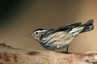
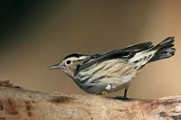

| Black-and-white Warbler | |
|---|---|
|  | |
| Conservation status | |
| Binomial name | |
| Mniotilta varia (Linnaeus, 1766) |
| Black-and-white Warbler | |
|---|---|
|  | |
| Conservation status | |
| Binomial name | |
| Mniotilta varia (Linnaeus, 1766) |
The Black-and-white Warbler, Mniotilta varia, is a small New World warbler. It breeds in northern and eastern North America from southern Canada to Florida.
This species is migratory, wintering in Florida, Central America and the West Indies down to Peru. This species is a very rare vagrant to western Europe, mainly to Ireland and Great Britain.
This species is 13 cm long and weighs 11 g. The summer male Black-and-white Warbler is boldly streaked in black and white, and the bird has been described as a flying humbug. There are two white wing bars. Female and juvenile plumages are similar, but duller and less streaked.
The breeding habitat is broadleaved or mixed woodland, preferably in wetter areas. Black-and-white Warblers nest on the ground, laying 4-5 eggs in a cup nest.
These birds feed on insects and spiders, and unlike other warblers, Black-and-white Warblers forage like a nuthatch, moving up and down tree trunks and along branches. The song is a high see wee-see wee-see wee-see wee-see wee-see, and the call is a hard tick.

{kind=link}
{kind=link}